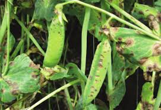

¿Conoces las enfermedades que afectan al cultivo de Arverja ?
Estas enfermedades se ha observado en los departamentos de Boyacá, Antioquia y Cundinamarca. Aunque no se han cuantificado pérdidas en el rendimiento de la arveja, el hongo es muy destructivo y afecta también otros cultivos como fríjol y habichuela.
Antracnosis
(Colletotrichum pisi Pat)

Es una enfermedad común en zonas productoras de arveja como Cundinamarca, Boyacá, Antioquia y Nariño. Es uno de los patógenos más destructivos, ya que compromete tallos enteros causando la muerte de las plantas en la base. Puede reducir el rendimiento hasta en un 20%. la cosecha.
El hongo afecta hojas, tallos y vainas. En las hojas aparecen lesiones irregulares de unos 2 a 8 mm, de color castaño o ladrillo, rodeadas de un halo amarillento. En los tallos, las lesiones se extienden y pueden causar el colapso total de la planta. En las vainas, las manchas son ovaladas, que pasan de amarillas a café oscuro; en infecciones severas, el hongo puede llegar a infectar las semillas
-
Semillas sanas y certificadas:
Evita usar semillas infectadas, ya que el hongo puede transmitirse por ellas Evitar el riego por aspersión en épocas húmedas, porque favorece la dispersión de esporas.
Rotacion de cultivo
No sembrar arveja ni leguminosas
susceptibles (como fríjol o haba) en la misma parcela durante al
menos 3 años.
- Eliminacion de residuos infectados Destruir restos de cosecha, ya que el hongo sobrevive en ellos.
-
Buena ventilación del cultivo
Evitar siembras muy densas para reducir la humedad en el
follaje.
- Evitar el riego por aspersión en épocas húmedas, porque favorece la dispersión de esporas.
Moho Gris
(Botrytis fuceliana)

Es un hongo que afecta principalmente el cultivo de arveja, aunque también puede atacar fríjol, haba y otras leguminosas. Se desarrolla en condiciones frías y húmedas, con temperaturas entre 15 y 17 °C, y se propaga por el viento, el agua o herramientas contaminadas. Sobrevive en restos de cosecha, semillas infectadas y suelos contaminados.
Produce manchas café en hojas que se cubren con un moho gris aterciopelado.
Causa marchitez y muerte de flores y botones florales.
Genera lesiones hundidas en tallos, afectando el flujo de savia.
Provoca pudrición en vainas e infección de semillas, reduciendo su germinación.
En infecciones severas, ocasiona caída de flores, secamiento de tallos y disminución del rendimiento del cultivo.
-
Usar semillas certificadas y libres de patógenos.
-
Sembrar en suelos bien drenados, evitando el exceso de humedad.
-
Mantener distancia entre plantas para mejorar la ventilación.
-
Eliminar residuos infectados después de la cosecha.
-
Realizar rotación de cultivos con especies no susceptibles.
-
Evitar el riego por aspersión y preferir riego por surcos o goteo.
-
Aplicar fungicidas preventivos al detectar los primeros síntomas